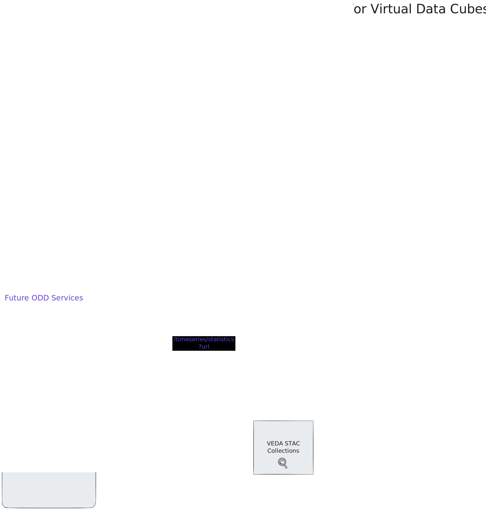

ODD Fiscal Year (FY) 2026 Roadmap
If you are interested in a better understanding of the ODD service roadmap, and what datasets will be supported when, this document is for you.
This document provides a roadmap for the VEDA Optimized Data Delivery Team (ODD), broken into 4 categories: 1. Services for granules in CMR 2. Services for datacubes 3. Services non-datacube 4. Foundational Work
It is important to note that this roadmap is a reflection of the team's current plans, written as of November 2025. These are likely to evolve over time. We intend to update the roadmap quarterly.
For a higher-level vision, see also: Optimized Data Delivery Roadmap for NASA - July 2025.
Legend
- ✅ Complete - Already delivered
- 🚧 In Progress - Active development
- 🔄 Ongoing - Ongoing work
- 📅 Planned - Scheduled for specific quarter
- 🔮 Future - Planned for future timeline

Roadmap for Service Category 1: Services for CMR Granules
Access
N/A
Visualization
- ✅ Complete titiler-cmr /tiles API + VEDA UI integration
Timeseries
- ✅ Complete titiler-cmr /timeseries/statistics API + VEDA UI integration
Additional Features
- 🚧 26.1 Release /compatibility endpoint
- 📅 26.2+ Develop support for more datasets, informed by compatibility testing in 26.1.
Dataset Support
- ✅ Complete Demonstrated with GPM IMERG, TROPESS O3 and MiCASA
- 🚧 26.1 Compile a list of compatible datasets
- 🚧 26.1 Develop support for EDL-based credential access, as an aternative to requester-pays and role-based access. To support NISAR (ASF) and GEDI L4B (ORNL DAAC) specifically.
- 📅 26.2+ Test integration of new datasets as requester-pays is enabled for more buckets.
Performance + Operations
- 🚧 26.1 Deploy monitoring + performance evaluation via service tracing (OpenTelemetry)
- 📅 26.1 MCP Production deployment
- 📅 26.2 Consolidated benchmarking utilities for advising users on zoom levels, AOIs and temporal parameters on a per-dataset basis
Ecosystem Development
- 📅 26.2 Share compatible dataset list with NASA product teams for potential integration (i.e. Worldview)
- 📅 26.2+ Continued documentation to support self-service use of titiler-cmr.

Roadmap for Service Category 2: Services for Datacubes
Access
- ✅ Complete Lazy loading/intelligent subsetting/intelligent access for varied data formats (GRIB, COG, NetCDF-4, HDF5 via VirtualiZarr)
- 📅 26.1 Support adoption of Virtual Zarr through library maintenance, improved documentation, and user support
- 📅 26.2 Support for arbitrary chunk-grids (variable chunking)
- 📅 26.2 Explore virtualization methods for alternate grid structures (i.e., healpix, cubegrid)
Visualization
- 📅 26.1 Virtual container (Icechunk) integration in titiler-multidim to support /tiles endpoints
- 📅 26.1 Identify additional I/O parameters to allow for per-dataset optimizations
- 📅 26.1 Test VEDA UI integration of /tiles for a virtual dataset (e.g. NLDAS)
- 📅 26.2 Additional performance improvements (e.g. obstore integration)
Timeseries
- 📅 26.1 Design the timeseries/statistics endpoint to support datacubes (i.e. could be an asynchronous API outside the titiler ecosystem)
- 📅 26.2 Develop the timeseries/statistics endpoint
- 📅 26.2 Integrate the timeseries/statistics endpoint into VEDA UI
Datasets
- ✅ Complete Prototyped virtual (Icechunk) stores for NLDAS, RASI, HRRR, MUR SST
- 📅 26.1 Demonstrate publication and tiling of NLDAS virtual store (💧 Water Insight)
- 📅 26.1 Architecture + documentation for generalizing STAC publication and VEDA UI /tiles integration
- 📅 26.2 HydroGlobe 5km and 10km virtual stores (💧 Water Insight)
- 📅 26.2 CarbonTracker-CHâ‚„, EPA Gridded CHâ‚„ Emissions Inventory virtual stores (ğŸ GHGCenter)
- 📅 26.3 Documentation for STAC publication and VEDA UI /timeseries/statistics integration
- 📅 26.3 CarbonTracker-CHâ‚„, EPA Gridded CHâ‚„ Emissions Inventory tiles and timeseries integrations (ğŸ GHGCenter)
- 📅 26.3 TROPESS NOx, TROPESS O3, JPL MOMO Chem, GEOS CF virtual stores, tiles and timeseries integrations (💨 Air Quality)
Operations
- 📅 26.2 Monitoring + Performance evaluation via service tracing (OpenTelemetry)
- 📅 26.3 MCP deployment
- 📅 26.2 Consolidated benchmarking utilities for advising users on zoom levels, AOIs and temporal parameters on a per-dataset basis
Ecosystem Development
- 📅 26.1 Create template data ingestion pipeline for virtualizing datasets
- 📅 26.3+ Moving towards self-service integration

Roadmap for Service Category 3: Services for Non-Datacubes
Access
- 🚧 26.1-26.3 Prototyping creating a query engine using a Zarr provider for data fusion
Visualization
- 🔮 26.4 or FY 27 Tiling endpoints in near-term, direct client approaches in long-term
Timeseries
- 🔮 26.4 or FY 27 Timeseries API
Datasets
- 📅 26.1 Prototype HLS store
- 📅 26.3+ Prototype NISAR and/or Opera stores
Operations
- 🔮 26.4 or FY 27 Operational deployment + documentation
- 🔮 26.4 or FY 27 Consolidated benchmarking utilities for advising users on zoom levels, AOIs and temporal parameters on a per-dataset basis
Ecosystem Development
- 🔮 26.4 or FY 27 Develop ecosystem, moving towards self-service adoption within VEDA and broader community
Roadmap for Service Category 4: Foundational Work (including Technical Debt)
- 🔄 26.1+ Establish areas for consolidation in the TiTiler ecosystem. Similar features across applications should rely on shared upstream libraries. The ODD team continuously identifying similar features and proactively DRY up codebases.